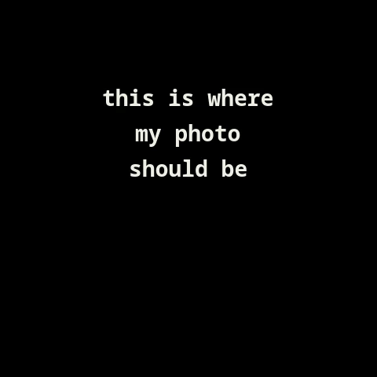

MOHAMMED SAMIR · PORTFOLIO
MOHAMMED SAMIR✳ AKA
OFFSEC ENTHUSIAST Web exploitation. CTFs.
Explore my work ↘ 
01 / THE HUMAN 0xMYTH ↗ + + + + +
First-year
SCROLL TO EXPLORE ↓
WEB EXPLOITATION ✳ CTFs ✳ AI AGENTS ✳ PYTHON / LINUX / DOCKER
01 / ABOUT THE PERSON BEHIND THE HANDLE
Curiosity.Offensive security. I’m Mohammed Samir, aka 0xMYTH — a first-year Cybersecurity student and OffSec enthusiast.
My focus is web exploitation, CTFs, and building autonomous agents that hunt flags. Alongside security, I build Flask applications and administer my own infrastructure.
Find me on GitHub ↗ CURRENT FOCUS HTB Web Penetration Tester path SQLMap Essentials — in progress
↗
CTF-AGENT.SERVICE IN DEVELOPMENT
OBSERVE 0xAGENT EXPLOIT
EVIDENCE → DECISION → ACTION 01
AI AGENTS / OFFENSIVE SECURITY 01 — 04
Autonomous CTF Agent A Pi-based agent for web and pwn challenges. Evidence-gated reasoning, pivot-on-failure logic, and a Docker sandbox with restart-safe checkpoints.
CAR-RENTAL.SERVICE LIVE PROTOTYPE
عقد تأجير سيارة التوقيع
CONTRACTS / HIJRI DATES / E-SIGNATURE 02
WEB APPLICATION / ARABIC RTL 02 — 04
Car Rental Management From a single HTML prototype to a Flask application for a family business: Arabic RTL, printable contracts, Hijri dates, and e-signature capture.
TAFWEEJ.SERVICE PRODUCTION
HAJJ SEASON OPERATIONS 03
OPERATIONS / WORKFORCE 03 — 04
Tafweej Workforce System Replaced 30+ disconnected Excel files for Al-Elyani Company: workforce deployment, fleet tracking, equipment custody, and movement scheduling.
0xMYTH-WEB.SERVICE RUNNING
CLOUDFLARE NGINX GUNICORN / FLASK FEDORA / SYSTEMD
SELF-HOSTED / SELF-ADMINISTERED 04
INFRASTRUCTURE / SYSTEMS 04 — 04
My Site’s Infrastructure Self-hosted on a box I administer. Flask applications served by Gunicorn behind Nginx, managed with systemd, with Cloudflare in front.
03 / FIELD NOTES LEARNING IN THE OPEN
Flags captured.Lessons kept. CTFs, certifications, and the next challenge.
✳ CERTIFIED
CompTIA Network+ 01st UCSI26 · AI-driven CTF University competition
↗ 03rd National CTF · Malaysia Top 3 national
↗ 120 Black Hat MEA 2025 Qualifier rank · top 100 required
↗ ON THE HORIZON First writeup in progress.